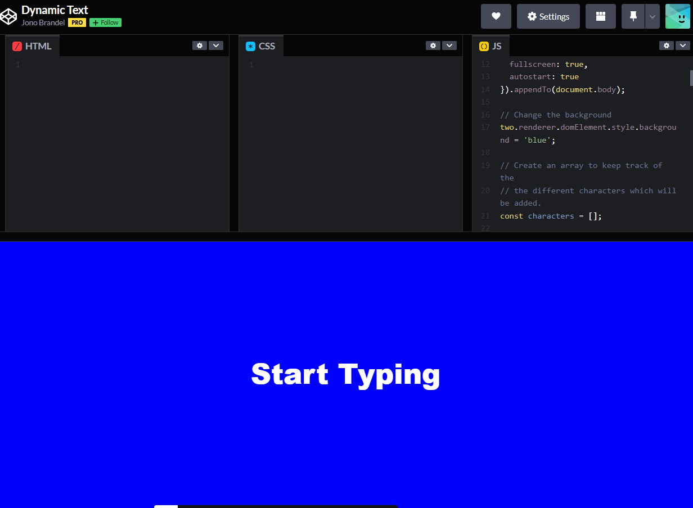
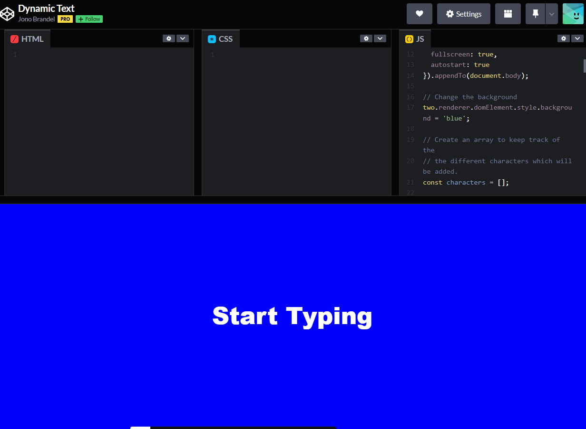

Interactive Elements Process
Joseph Caiado 06/2022
1. Concept Creation
The initial concept I considered was a text-based game. I pondered this choice only briefly though as I felt that this route was too obvious and straightforward for something supposed to be considered abstraction. A game does have a lot of room to create an abstract experience through storytelling or lack-there-of, but I think that in making something such as a game the idea of abstraction is already void. This is because a videogame, or more generally a game are tangible things that a user could interact with outside of the experience that would influence their perception of the experience I wanted to create.
Instead, I decided to explore the concept of secrets, and how people often go through life keeping secrets in fear of upsetting and losing those closest to them. The experience provides users a private way to express and release any bottled emotions and feelings from the weight of keeping their secrets. The experience serves as an opportunity for reflection, as the secret remains on the screen in front of them even when the textbox clears itself. The interaction and/or reflection for the user continues through the visual of their secrets (text) falling and hitting the edge of the browser. If the user continues to enter another secret(s), they begin to pile up and the user is faced with a visual representation of the weight maintaining secrets can have on an individual.

 

2. Audit and Visual Design
My one and only reference for this project is We’re Not Really Strangers (WNRS). WNRS started as a social media account posting uplifting content, that encourages users to feel their emotions and be human, recognizing that we all have different experiences but that they often overlap. I started out using a red slightly darker than they use in direct reference to their story and designs, but it was pointed out to me by a classmate that colors play an important role in getting user’s trust and making them feel comfortable sharing secrets and thus pushed me to change my colors to shades of blue. I also inspected and utilized the font that they use in their logo and copy on their webpage to re-create the comfort that I get from interacting with their content, knowing that it will be sentimental or emotional and most importantly affirming of people’s emotions.
3. Sitemap
I knew for this concept that I didn’t want to use more than one page, as it would distract and thus detract from the experience itself. I don’t have any call to action or anything of the likes as well since I was creating this to be an experience, and not as marketing for a device or product.
4. Development
In development, I decided that to be able to complete the amount of work required for what I wanted to accomplish I would need to pivot the outcome of the experience. Thinking about some comments I received from the Professor, I decided to change the interaction to creating new divs that were square in shape and resembled post-it notes with the user’s input. The new interaction would allow for the user to input a secret and then move it off screen with a mouse drag, or alternatively, they could enter spaces as input and overlay another ‘post-it’ or div, overtop of their secret. This allows the user to decide if they want their secret to be visible or not, but also requires them to explore the page and the interactions they can utilize. If given more time, I would like to make this a generative tool in which all the secrets shared are maintained on the page and create an amalgamation of secrets from various users. Thus creating a pool that other users could read through and possibly find other anonymous users going through a similar circumstance.


5. The Final Project
The project is finished already, and you should go view it by clicking here